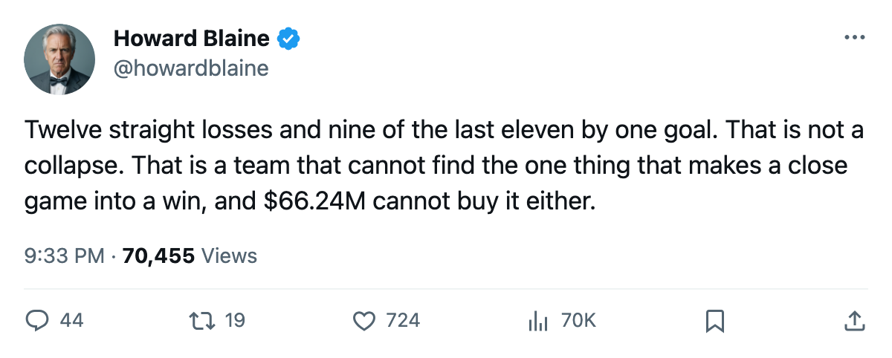
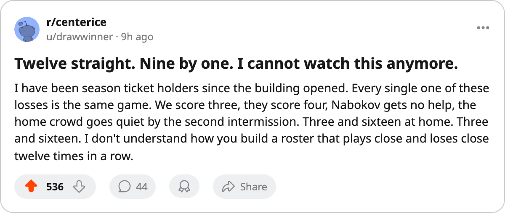

Nine One-Goal Losses in Eleven Games: San Jose Is 12 Straight Without a Win, and Every One of Them Could Have Gone the Other Way
The Sharks carry a $66.24M payroll, sit 13th in the Western Conference, and cost $2.07M per point, the worst rate in hockey
 Howard BlaineSenior writer, The Blaine Rankings · The Hockey Gazette
Howard BlaineSenior writer, The Blaine Rankings · The Hockey Gazette
 San Jose Sharks has lost 12 consecutive games. Nine of the last 11 came by a single goal, the kind of close defeat that makes a losing streak look like bad luck until you realize it keeps happening. The Sharks carry the third-highest payroll in the league at $66.24M, sit 13th in the Western Conference with 32 points through 39 games, and cost $2.07M per point, which is the worst figure in professional hockey.
San Jose Sharks has lost 12 consecutive games. Nine of the last 11 came by a single goal, the kind of close defeat that makes a losing streak look like bad luck until you realize it keeps happening. The Sharks carry the third-highest payroll in the league at $66.24M, sit 13th in the Western Conference with 32 points through 39 games, and cost $2.07M per point, which is the worst figure in professional hockey.
This desk wrote on December 8 that five clubs carried payrolls above $66M and four of them were in the playoff picture. San Jose was the fifth. It is now 1 point behind 12th-place Chicago, and the gap between the Sharks and the eighth seed in Detroit is 11 points. The calendar has not named a deadline for this story, but the arithmetic has: 43 games remain, and the club that spent the most per point last December is not closing on anyone.
The losses are close because the team is not bad, and that is the problem
In the 11 defeats between December 14 and January 4,  Evgeni Nabokov87 gave up 3 or 4 goals in 10 of them. San Jose scored 3 in 7 of the 11. The margin in regulation was exactly 1 goal in 6 games, and the overtime losses came on a fourth goal scored against a team that had tied it at 3. No game was a blowout. The Sharks can play for 58 minutes and cannot find the one thing that separates a win from a point.
Evgeni Nabokov87 gave up 3 or 4 goals in 10 of them. San Jose scored 3 in 7 of the 11. The margin in regulation was exactly 1 goal in 6 games, and the overtime losses came on a fourth goal scored against a team that had tied it at 3. No game was a blowout. The Sharks can play for 58 minutes and cannot find the one thing that separates a win from a point.
Nabokov sits at 9 wins and 22 losses with a 2.79 goals-against average and a save percentage of 0.859, the lowest of any goaltender with 25 or more starts. His overall grade is 83. He is not the reason for the streak, but he is not the reason for any win either, and that distinction matters when you are paying $66.24M.
San Jose is 3-16 at home, the worst in hockey. Chicago is 4-15 for the second-worst. The Sharks have won 9 of 20 on the road and 3 of 19 in front of 13,181 people a night. The building draws fewer than Tampa Bay's 16,877 for half the points.
The cost per point is the whole story
$2.07M per point. The second-worst in the league is Los Angeles at $1.97M, a club with 30 points on $59.22M. San Jose carries $66.24M and scores 2 more points than a Kings club on $59.22M. The Sharks trail Detroit by 11 points, and at the rate they are playing the arithmetic says this is structural, not a matter of running out the calendar.
| Club | Payroll | Points | Per point | Conference rank |
|---|---|---|---|---|
| San Jose Sharks | $66.24M | 32 | $2.07M | 13th |
 Los Angeles Kings Los Angeles Kings | $59.22M | 30 | $1.97M | 15th |
 Washington Capitals Washington Capitals | $57.05M | 32 | $1.78M | 15th |
 Florida Panthers Florida Panthers | $57.60M | 33 | $1.75M | 14th |
The four clubs above San Jose on the worst-value table are all cheaper. None of them is winning either, but none of them is losing at the rate the Sharks are. Philadelphia, which pays $55.67M, holds the eighth Eastern seed with 45 points on $1.24M a point. San Jose carries $66.24M and sits 1 point behind that club in its own conference with a worse goal differential.
What the schedule offers, and does not
The week ahead gives San Jose four games, all on the road: at  Nashville Predators on January 7, at
Nashville Predators on January 7, at  St. Louis Blues on January 9, at Los Angeles Kings on January 11, at
St. Louis Blues on January 9, at Los Angeles Kings on January 11, at  Mighty Ducks of Anaheim on January 12. No home date. The last time the Sharks won at home was before the streak began. Their record in the Pacific Division is 2-3-2, and they are 0-2 against Anaheim this season with both games decided by 1 goal.
Mighty Ducks of Anaheim on January 12. No home date. The last time the Sharks won at home was before the streak began. Their record in the Pacific Division is 2-3-2, and they are 0-2 against Anaheim this season with both games decided by 1 goal.
The streak does not hurt the way a blowout would. Nobody is getting traded yet. The trade deadline sits 73 days away, and until then the Sharks will keep playing close games that they will keep losing, and the $2.07M will keep accumulating, point by point, or rather point by point that does not come.
On December 8 this desk asked who was buying the worst points in hockey. The answer has not changed. It is only further away now.

